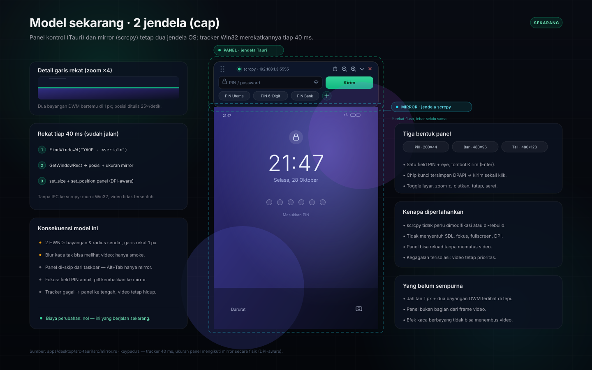
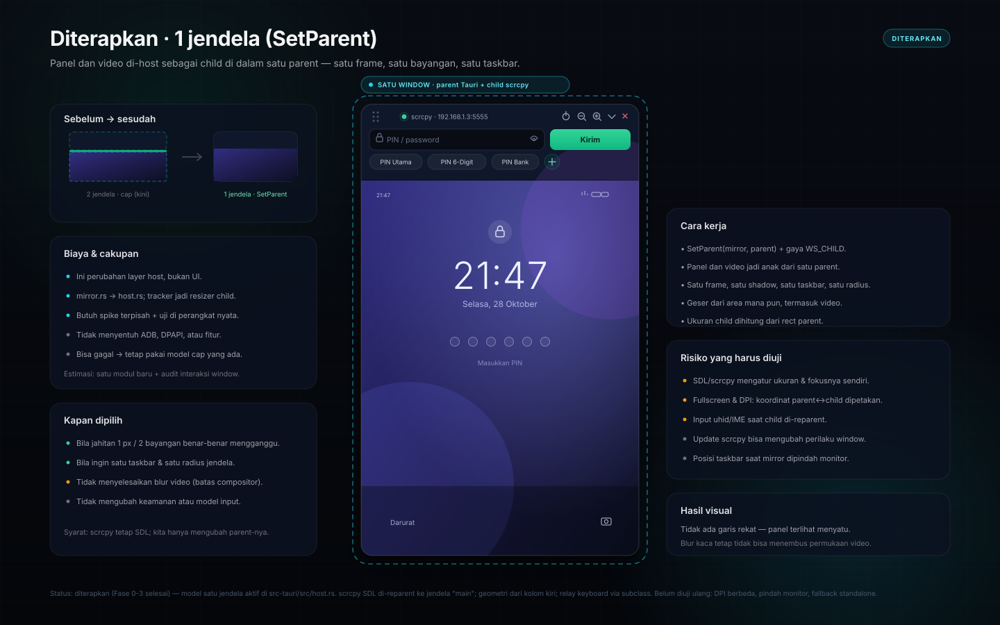

YAOP · konsep antarmuka
Konsep ini membandingkan dua cara menempelkan panel ke video. Kiri: model yang berjalan sekarang — dua jendela OS yang direkatkan tracker 40 ms. Kanan: usulan — panel dan video menjadi child dari satu parent window. Klik gambar untuk membuka SVG resolusi penuh.
Panel Tauri selalu-on-top menempel rata di atas jendela scrcpy. Lebar, posisi, dan bentuknya dihitung ulang tiap 40 ms.

Jendela scrcpy di-reparent sebagai child di dalam satu jendela induk. Satu frame, satu bayangan, satu entri taskbar.

Ringkas — bukan keputusan implementasi.
| Aspek | 2 jendela (cap) | 1 jendela (SetParent) |
|---|---|---|
| Jendela OS | 2 HWND: panel + mirror | 1 parent + 1 child |
| Taskbar / Alt+Tab | Panel di-skip; hanya mirror | Satu entri |
| Garis rekat | 1 px + dua bayangan DWM | Tidak ada |
| Blur kaca di atas video | Tidak bisa (jendela lain) | Tetap tidak bisa (compositor) |
| Seret / resize | Sudah jalan (panel = title bar) | Perlu diteruskan ke SDL |
| Biaya perubahan | Nol | Modul host baru + uji perangkat |
| Risiko | Terisolasi: video tetap hidup | Fokus, DPI, fullscreen, uhid |